http://www.jmr-source.com/jmr_down.htm
Eclipse installation location: http://www.jmr-source.com/update/site.xml
Windows, Mac, Linux.
In the Eclipse menu bar, click Help -> Eclipse Marketplace. Search Jmr, click Install.
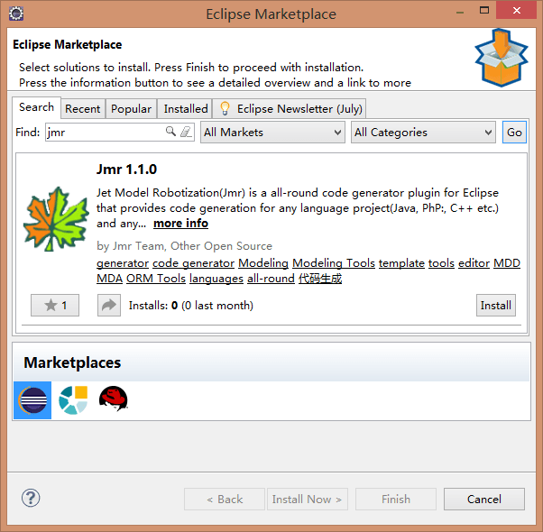
In the Eclipse menu bar, click Help -> Install New Software -> Add
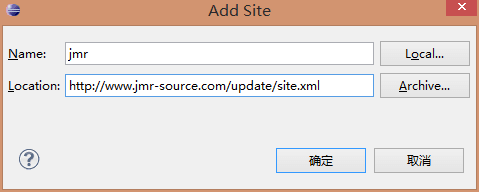
Check Basic, Jet, and Jmr, Click Next until the download is complete, and restart Eclipse
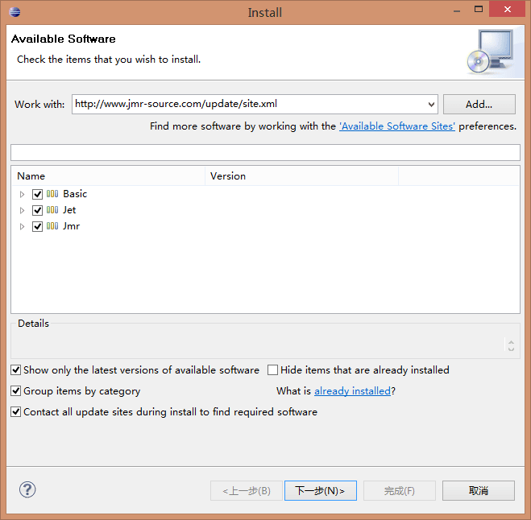
If the installation is slow or connection is bad unable to install, uncheck please Contact all update...
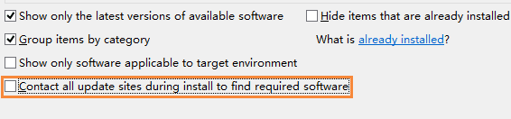
After successful installation through the above 2 ways and eclipse restart, click Yes to start initializing the Jmr component
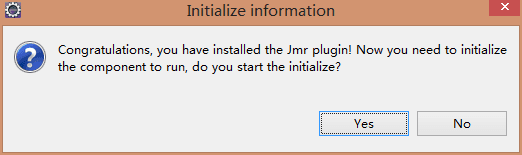
The installation is complete and the local document is opened, including all Jmr tutorials.
You can see the icon of Jmr in the toolbar
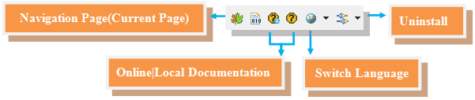
1.There is no "Install New Software" option in Help
In menubar select Window --> Preferences --> General --> Capabilities, check Classic Update，click Apply and restart Eclipse.
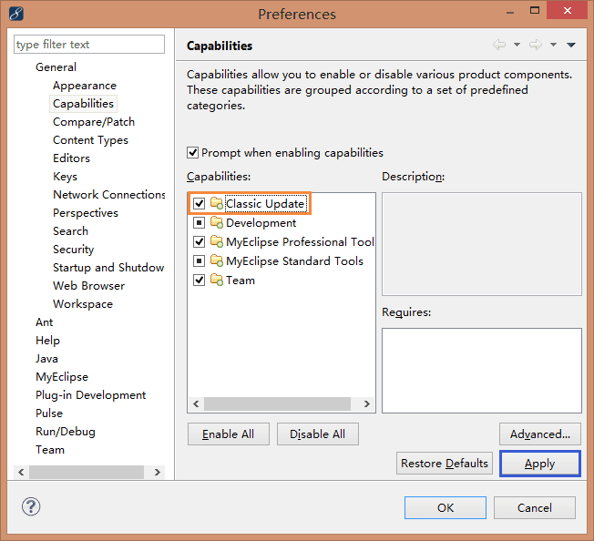
2.If the installation is slow or connection is bad unable to install, uncheck please Contact all update...
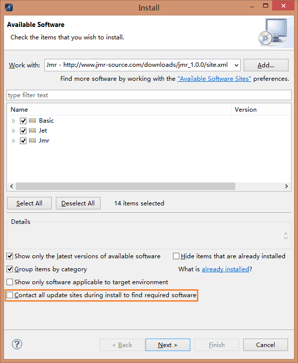
3.If the following page appears, select Update my installation the same...
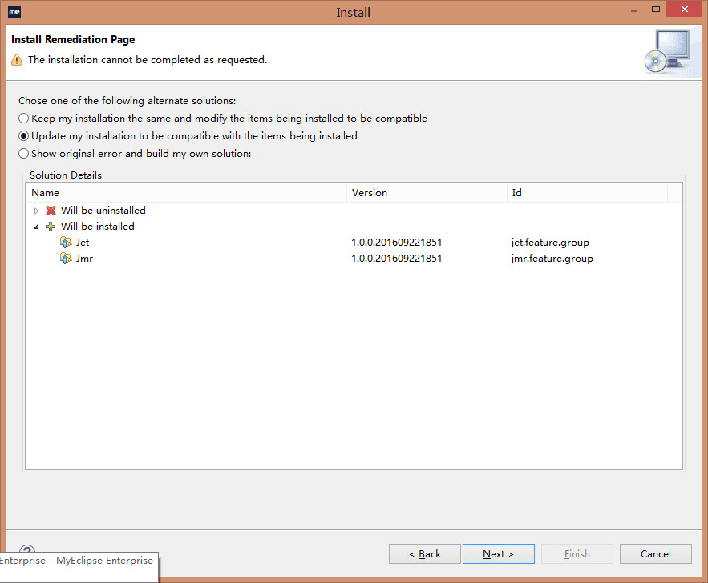
4.After installation, if the following errors or other compilation errors occur.
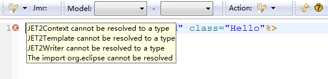
1) Click the button below to rebuild the JET2Project.
2) Cleaning or changing the workspace and restart Eclipse.
Click uninstall in the toolbar
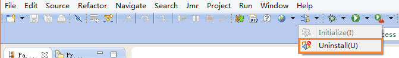
Click Yes and start uninstalling
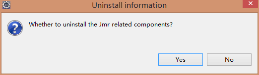
To completely delete the Jmr plug-in, click Yes
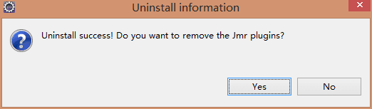
Click Ok
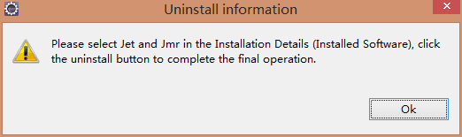
Select the Jet and Jmr components, click Uninstall to complete, and restart the Eclipse